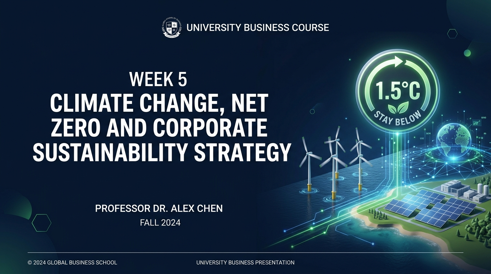

氣候變遷、淨零排放與企業永續策略 Climate Change, Net Zero & Sustainability
Climate Change, Net Zero and Corporate Sustainability Strategy Climate Change, Net Zero and Corporate Sustainability Strategy
巴黎協定 1.5°C 防線、Scope 1-3 碳盤查、歐盟 CBAM 碳關稅與全球 7 大企業標竿策略 Paris Agreement 1.5°C Target, Scope 1-3 Accounting, EU CBAM, and Global Corporate Net Zero Strategies

課程邏輯主線：深入 ESG 中的 Environment (E) Course Thread: Deep-Dive into ESG Environment (E)
W1-2 Ethics
倫理基因Moral DNA
W3 CSR/CSV
責任行動Actions
W4 ESG
永續全貌ESG Overview
W5 Today
Climate & Net Zero
(氣候淨零策略)Climate & Net Zero
(E Pillar Strategy)
暖身問題：如果地球升溫 2°C，企業真的會受影響嗎？ Warm-up: If Earth Warms +2°C, Will Business Suffer?
「氣候變遷不再是遙遠的環保口號！升溫 2°C 意味著極端天災導致全球供應鏈中斷、廠房淹水天價損毀、保險費用暴增與各國碳關稅重罰。氣候風險即是企業財務風險！」 "Climate change is a direct financial risk! +2°C means supply chain collapse, flooded factories, soaring insurance costs, and carbon border tariffs."
全球氣候現實：IPCC AR6 最新發現 IPCC AR6 Climate Assessment
Heatwaves
極端熱浪衝擊勞工生產力Extreme heatwaves hit productivity
Floods
暴雨洪災重創工業園區Severe floods submerge industrial parks
Wildfires
森林野火毀壞森林與供應鏈Wildfires destroy timber & transit
Sea Level
海平面上升威脅沿海港口Sea level rise threatens coastal ports
Weather
極端氣候常態化衝擊農工Extreme weather shocks agriculture
TCFD 企業三大氣候風險 Three Corporate Climate Risks
1. Physical Risk
實體風險：極端天災造成廠房損毀、停電與物流中斷。Physical damage to factories, power outages & logistics.
2. Transition Risk
轉型風險：碳關稅法規加嚴、高碳設備報廢與技術轉型成本。Carbon tax regulations, stranded assets & tech costs.
3. Reputation Risk
信譽風險：高碳排企業遭受消費者抵制與機構投資人撤資。Consumer boycotts and institutional divestment.
巴黎協定 (Paris Agreement 2015) The Paris Agreement Target
控制全球升溫遠低於 2°C，力爭 1.5°C 以內Limit Warming Below 2°C, Pursuing 1.5°C
2015 年 196 個締約國於 COP21 簽署具有法律約束力的全球氣候條約，為本世紀全球碳預算劃定防線。 Legally binding international treaty adopted at COP21 in 2015 to set global carbon budgets.
為什麼 0.5°C 的差距關係到生存？ Why 0.5°C Difference Means Survival
1.5°C Scenario
- 極端熱浪受災人口減少 4.2 億人。420M fewer people exposed to heatwaves.
- 珊瑚礁消失 70-90%（尚存一絲希望）。Coral reefs decline by 70-90%.
2°C Scenario
- 熱浪受災人口增加數倍，水資源極度匱乏。Multiplied population facing water scarcity.
- 珊瑚礁摧毀高達 99%（生態完全崩潰）。99% of coral reefs completely destroyed.
什麼是 Net Zero (淨零排放)？ What is Net Zero Emissions?
人為排放 － 人為移除 ＝ 0Human Emissions - Human Removals = Zero
企業透過極致減碳，將溫室氣體排放降至接近零，無法消除的殘餘排放量則透過碳移除技術（植樹造林、CCUS 碳捕集）完全抵銷！ Reducing emissions close to zero, with any residual emissions permanently sequestered through carbon removals (CCUS / afforestation).
Carbon Neutral vs. Net Zero 差別在哪？ Carbon Neutral vs. Net Zero Matrix
| 比較面向Dimension | Carbon Neutral (碳中和) | Net Zero (淨零排放) |
|---|---|---|
| 氣體涵蓋Gas Scope | 通常僅涵蓋二氧化碳 (CO2)Typically covers CO2 only | 涵蓋所有 7 種溫室氣體 (GHGs)Covers all 7 Greenhouse Gases |
| 實質減碳要求Decarbonization Mandate | 無強制減碳比例，可大量購買碳權抵銷No mandatory limit, offsets allowed | 強制範疇 1,2,3 進行 90-95% 深度實質減碳Mandates 90-95% deep emission cuts |
企業 2050 Net Zero 與 SBTi 標準 SBTi Science-Based Targets
SBTi 科學基礎減碳倡議Science Based Targets initiative
全球已有數千家企業加入 SBTi，要求企業減碳路徑必須符合巴黎協定 1.5°C 的氣候科學預算，禁止漂綠承諾！ SBTi validates corporate decarbonization targets against 1.5°C climate science pathways to prevent greenwashing pledges.
全球 7 大標竿企業 Net Zero 承諾與轉型 7 Global Leaders' Net Zero Strategies
2030 Carbon Neutral
全價值鏈 2030 碳中和，供應鏈 100% 綠電。2030 carbon neutral supply chain.
Carbon Negative 2030
2030 負碳，2050 移除自 1975 成立以來所有累積碳排！Remove all historical carbon by 2050.
Fossil to Wind
10 年內從石油石化企業徹底轉型為全球離岸風電巨擘！Complete transformation to offshore wind.
RE100 2040
承諾 2040 全球營運 100% 綠電，2050 淨零。100% RE100 by 2040, Net Zero by 2050.
Net Zero Challenge Quiz Net Zero Challenge Quiz
10 題 True/False 觀念搶答10 True/False Questions
1. Carbon Neutral 等於 Net Zero？ (False)
2. 巴黎協定要求全球 2050 年強制零碳？ (False)
3. Scope 3 屬於供應鏈，企業可以完全忽視？ (False)
1. Carbon Neutral equals Net Zero? (False)
2. Scope 3 can be ignored by corporations? (False)
答案解析與迷思釐清 Activity 1: Debrief & Myth Busting
教師觀點帶出 (Key Takeaway)：Faculty Debrief:
「Scope 3 雖然不在企業廠區內，但佔碳足跡 80%–95%！不管理 Scope 3 供應鏈，就無法達成真正的 Net Zero。」 "Scope 3 accounts for 80-95% of corporate carbon footprints. Managing supply chain carbon is non-negotiable."
什麼是 Carbon Footprint (碳足跡)？ What is a Carbon Footprint?
產品與營運全生命週期溫室氣體總和Total Lifecycle GHG Emissions
依據 GHG Protocol 溫室氣體盤查協定，衡量企業活動或單一商品從原料開採、製造、運輸到廢棄處理所產生的二氧化碳當量 (CO2e)。 Measuring the total greenhouse gas emissions (CO2e) caused directly and indirectly by a product or business across its lifecycle.
Scope 1, Scope 2, Scope 3 範疇拆解 Scope 1, 2, and 3 Breakdown
Scope 1 (Direct)
公司廠區直接排放：公務車、製程發酵、煙囪直排。Direct emissions from owned/controlled sources.
Scope 2 (Indirect)
外購能源間接排放：外購電力、蒸汽、冷氣。Indirect emissions from purchased electricity/heating.
Scope 3 (Value Chain)
價值鏈上下游間接排放：原料採購、物流、產品使用。All other indirect supply chain emissions.
為什麼 Scope 3 最難卻最關鍵？ Why Scope 3 is Hardest Yet Critical
佔企業總碳足跡高達 80%–95%！Accounting for 80-95% of Corporate Footprint
Scope 3 涵蓋海外數千家供應商與全球消費者使用階段，數據搜集困難且缺乏控制權。但沒有 Scope 3 減碳，就沒有真正的 Net Zero！ Scope 3 covers thousands of global suppliers and user phases, where data is hard to track, yet it comprises 80-95% of total carbon footprint.
Apple 供應鏈 Clean Energy 計畫 Apple Clean Energy Supply Chain Program
輔導全球 200+ 供應商轉用 100% 綠電Over 200 Suppliers Committed to 100% Clean Energy
Apple 透過 Clean Energy Program，協助台積電、鴻海、日月光等供應商在代工生產 Apple 產品時全數使用綠電，帶動全球電子產業低碳轉型。 Apple assists key suppliers in adopting renewable electricity for all Apple production, accelerating the decarbonization of global electronics.
台積電與台達電減碳實務標竿 TSMC & Delta Electronics Benchmarks
台積電 (TSMC)
- 簽訂全球半導體最大離岸風電購電合約 (PPA)。Largest semiconductor PPA for offshore wind.
- 承諾 2040 100% RE100 綠電。100% RE100 target moved up to 2040.
台達電 (Delta)
- 實施內部碳定價 (ICP, 每噸 $300 美元)。Internal Carbon Pricing ($300/ton).
- 碳費收益直接轉為低碳創新研發基金。Carbon fees fund internal low-carbon R&D.
碳盤查國際標準：ISO 14064 & ISO 14067 ISO Carbon Accounting Standards
ISO 14064
組織層級溫室氣體盤查與查證標準。Organizational GHG inventory & verification.
ISO 14067
單一產品全生命週期碳足跡核算標準。Product lifecycle carbon footprint standard.
CDP (Carbon Disclosure Project) 評級 CDP Carbon Disclosure Ratings
全球權威氣候揭露問卷評級 (A to D-)Global Climate Rating (A to D-)
每年全球超過 23,000 家企業參與 CDP 問卷填報。CDP A List 評級企業代表具備頂尖氣候治理與減碳透明度。 Over 23,000 global companies report to CDP annually. CDP A List firms lead in climate governance transparency.
碳定價工具 1：Carbon Tax (碳稅) Carbon Pricing: Carbon Tax
政府直接依溫室氣體排放噸數徵稅Government Direct Tax Per Ton CO2e
政府設定固定碳價（如新加坡每噸 $25 美元，台灣碳費機制），排碳越多繳稅越多，以價格機制引導企業減碳。 Governments fix a carbon price per ton emitted (e.g. Singapore $25/ton), penalizing pollution via direct taxation.
碳定價工具 2：ETS (總量管制碳交易) Emissions Trading System (Cap & Trade)
設定排放上限，允許企業買賣碳權Capping Total Emissions with Market Trading
如歐盟 EU ETS：政府設定總排放上限並發放配額。減碳成功的企業可將剩餘配額賣給超排企業獲利！ EU ETS sets overall emission caps; companies reducing emissions below quota can sell excess allowances on open markets.
歐盟 CBAM 碳邊境調整機制 EU Carbon Border Adjustment Mechanism
2026 正式實施
2026 年起正式對進口商品課徵 CBAM 碳關稅。Formal implementation of border carbon tariffs in 2026.
6 大管制產業
鋼鐵、水泥、鋁、化肥、電力、氫氣。Steel, cement, aluminum, fertilizer, power, hydrogen.
憑證抵扣機制
進口商需購買 CBAM 憑證，可抵扣原產國已繳碳費。Importers buy certificates minus origin carbon paid.
防止碳洩漏
防止高碳排產業搬離歐盟的「碳洩漏 (Carbon Leakage)」。Prevents carbon leakage of factories leaving EU.
CBAM 如何衝擊台灣與全球出口供應鏈 How CBAM Impacts Exporting Firms
未做碳盤查與減碳 ＝ 出口面臨天價關稅！No Carbon Accounting = Catastrophic Tariffs
台灣鋼鐵、螺絲扣件、電子零部件大量出口歐盟。未建立 ISO 14064/14067 碳盤查與減碳策略的企業，產品將被課徵天價 CBAM 關稅而失去市場競爭力！ Exporting firms without carbon accounting will face devastating CBAM tariffs at EU ports, pricing them out of global supply chains.
Design Your Net Zero Company Design Your Net Zero Company
小組抽籤任務：設計 2050 Net Zero 轉型藍圖Formulate a 2050 Net Zero Roadmap
1. Starbucks (餐飲門市/植物奶/杯具回收)
2. Apple (供應鏈/綠電/消費電子回收)
3. Uniqlo (快時尚有機棉/循環回收)
4. TSMC / 7-Eleven (綠電PPA/物流車隊)
各組 3 分鐘 Net Zero 藍圖 Pitch 3-Min Net Zero Roadmap Pitches
教師點評：減碳優先順序要因地制宜Decarbonization Priorities by Industry
服務業重點在於物流車隊與門市能源；製造業重點在於製程綠電與原料低碳化。Net Zero 策略必須結合核心商業模式。 Services focus on retail/logistics energy; manufacturing focuses on green power & low-carbon materials.
W5 重點總結與 Homework 5 Summary & Homework 5 Guidelines
Homework 5：企業碳管理分析個案 (1,500字)Homework 5: Carbon Strategy Case (1,500w)
選擇一家企業，分析其 Net Zero 宣告與年份、Scope 1,2,3 減碳措施、是否符合巴黎協定 1.5°C 並提出個人管理建議。 Select a firm, analyze Net Zero goals, Scope 1,2,3 actions, Paris alignment, and managerial challenges.